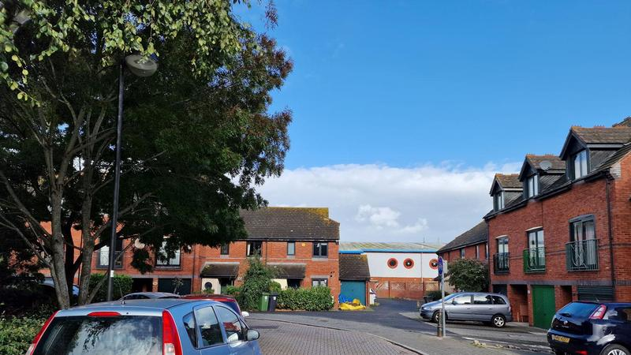
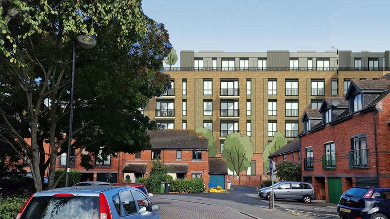
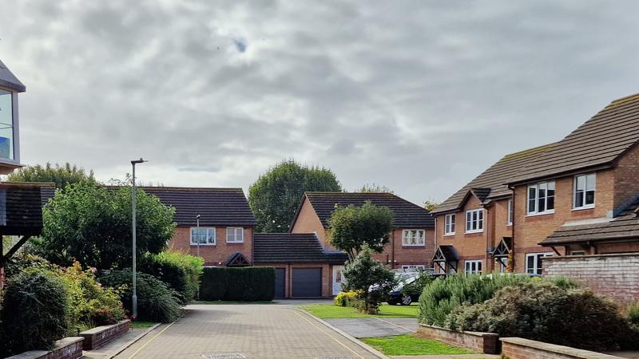
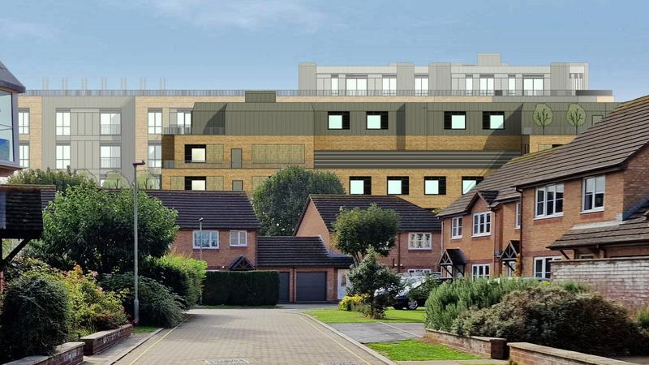

Redeveloping a strategically-significant site that is only a stone’s throw from Exeter’s historic quay and canal basin was always unlikely to be plain sailing. The sensitivity of the surroundings and the impact of the proposals on the many who live nearby, and more who regularly visit the area, all needed careful navigation to avoid deep water.
Developer Coplan Estates and partner Welbeck CP have had plenty of time to chart a course around these hazards since buying the 100,000 square feet Haven Bank retail park in June 2020.
Extensive pre-application consultation with planning officers, local councillors and other stakeholders, a design review panel and members of the public nevertheless led them to seek permission in August to construct 434 rental units in four blocks accommodating up to 1,167 people on the 1.7 hectare site, with cafe/restaurant and retail units on the ground floors.
So when the council’s planning consultation closed last Friday they were presumably unsurprised that of 283 comments on the scheme submitted by local residents, only four were in favour.

Haven Banks redevelopment proposals ground floor plan. Image: Piper Whitlock.
While some respondents recognised a need to redevelop the site, many expressed concern about the scale of the proposals: the largest 336-bed block would be 50 feet taller than its existing two-storey residential neighbours.
Jesamy Wood said: “Six floors of high density flats isn’t sympathetic to the beautiful and historic quayside area” while another local resident said she was “hugely concerned about the height of the buildings” adding that the “noise levels of the proposed bars that my house will back directly on to is going to be life changing.”
Many criticised the lack of social or family housing in the plans, singling out the co-living units in particular. Steven Hodge said the proposed development “addresses none of the reasons local people cannot afford to buy” while Judith Gale described it as “poor quality housing, particularly the bedsits” which she said “should not be regarded as homes and must not be approved.”
Others cited the impact of new residents on local healthcare services and roads, and said removing the 220-space retail car park would have significant knock-on effects. Erik de Bie said car parks in the area were already often fully occupied while illegal parking on double yellow lines made it difficult for emergency vehicles to access the area.
Harriet Turner said it was inevitable that new residents and site visitors would have cars, adding that “public transport in Exeter is appalling and although a walk into town from the site is not far, people use their cars for work and commuting.” She concluded that the developer’s “assumption that it will be a car free zone is utterly ridiculous”.
Computer generated aerial view of proposed development from south. Image: Piper Whitlock.
The Environment Agency also emphatically objected to the proposals, citing their failure to satisfy sections of the National Planning Policy Framework — sufficient to scupper the scheme because the Haven Banks site is at high risk of flooding.
The government body said the developer’s Flood Risk Assessment did not pass muster, not least because it proposed evacuating occupants through flood defences and across the flooded waters of the River Exe, which it said would be “very unsafe”, presenting a “risk to life once flood levels breach out of the ‘normal’ river channel”.
It also criticised the developer for falsely claiming that it supported the proposals, saying that since the beginning of this year it had “informed the applicant of our numerous concerns that needed to be fully resolved before we would not object to any subsequent planning application”.
It added: “Our correspondence in May, June and July 2022 (before submission) and August 2022 (after submission) again expressed our concerns with significant elements of the Flood Risk Assessment and principles of the scheme”.
It warned the developer that it would maintain its objection unless an assessment was produced which “demonstrates that the development is safe from flooding over its lifetime”, saying that “the only solution in this area of Exeter is to be part of a wider strategic solution” which it had previously laid out.
This would involve using a nearby railway embankment as a flood escape route, which it said the Haven Banks development would need to access “via a new pedestrian bridge over the live railway line”.
The embankment flood escape route would be intended for use by all the Liveable Exeter development sites in the Water Lane and Marsh Barton areas.
Proposed Haven Banks blocks C & D elevations. Image: Piper Whitlock.
As Haven Banks is the first significant site to come forward in the area it appears its developer may have to swallow the flood risk mitigation costs in order to proceed, although with plans for much of the rest of the Water Lane area expected to follow before the end of the year it may seek to share the load.
However flood risk isn’t the only issue the Haven Banks proposals raise about the “Liveable Exeter principles” on which the developer says its scheme is based.
It presents the scheme as a “vibrant garden community” which will form part of the Water Lane “urban village” and includes Liveable Exeter concept sketches in its application to press the point.
But the scheme’s density and amenity levels are about as far from Ebenezer Howard’s garden city vision as they could be, notwithstanding the government’s appropriation of the idea for the “new wave of garden towns and villages” it has promoted for the past eight years and in which Exeter became embroiled in 2019.
Exeter’s average housing density is currently just over twelve dwellings per hectare, having increased slightly from just under eleven dwellings per hectare over the past decade. This figure, which is about half the average across London, includes green and other open spaces.
Typical housing densities in Exeter’s residential areas range from 20 to 90 dwellings per hectare, with high density city centre studio flats above 190 dwellings per hectare, according to an LDA Design study which forms part of the new Exeter local plan evidence base.
The Haven Banks scheme proposes a density of 255 dwellings per hectare, twenty one times the current Exeter average and more than double the density recommended for this area in the study.
 Street level view of development site from adjacent Chandlers Walk showing rear of existing retail park. Image: Haven Banks Residents Group.
The LDA Design study says: “For residential development, the number of dwellings per hectare is the most widely used metric for assessing density and is considered the most appropriate means of measuring density for this document”, although it offers no evidence to support this claim.
And it treats student accommodation differently, counting the number of bedrooms in cluster flats instead, although it does not appear to count houses in multiple occupation the same way.
Adopting this approach to the Haven Banks scheme reveals a density of 345 bedrooms per hectare, but still doesn’t meaningfully capture the density of the proposals, which show two people occupying most, although not all, rooms.
The Haven Banks developers propose that as many as 1,167 people will live on the site, with up to six people sharing one unit. Counting inhabitants per hectare, instead of dwellings, is a more appropriate density metric in such circumstances, and is also widely used.
Exeter’s 130,800 inhabitants share the city’s 4,704 hectares at an average density of a little less than 28 inhabitants per hectare. The Haven Banks scheme proposes a density of 686 inhabitants per hectare, nearly twenty five times the Exeter average.
This is significantly greater than the density in the centre of Manila, the world’s most densely populated city, where 1.85 million people live in a sixteen square mile area only slightly smaller than Exeter.
 Computer generated street level view of proposed development from adjacent Chandlers Walk. The developer has not prepared images showing the visual impact of its proposals from this direction. Image: Haven Banks Residents Group.
Are the “Liveable Exeter principles” intended to produce development designs at such extreme densities? The outline draft of the new local plan says Liveable Exeter principle number two is to build at what it calls “optimal density”, which it does not otherwise define, although it does say that the purpose of doing so is to support a significant increase in affordable housing provision.
The new local plan instead relies on the LDA Design study for density specifics. This says: “High density development also means improving affordability and providing better accessibility to housing of all types and tenure, so that for example, people have options to remain within existing neighbourhoods when growing a family, as well as down-sizing in later life.”
The Haven Banks developer says that just one fifth of the 246 build-to-rent units will be offered at 20% discounts against market rates while no affordable co-living units will be provided at all, which it says council planning officers agreed in advance.
It also says the council agreed that it would not have to supply a viability assessment to support its application, a document which would reveal just how profitable it expects the scheme to be.
 Street level view of development site from adjacent Stream Court. The course and condition of the stream known to run beneath this street and part of the existing car park have not been investigated. Image: Haven Banks Residents Group.
Without knowing how much the Haven Banks units are expected to cost to rent it is impossible to know how affordable they might be at a 20% discount, although council planning committee members are free to press the developer on this aspect of its proposals.
However as the smallest one bed flats at Haven Banks would be nearly three times the size of the co-living rooms at The Gorge, Exeter’s first such development, and those rooms are set to start at £946pcm, it seems likely that they will be accessible to few who rely on local wages to rent.
As at The Gorge, this raises the question whether the Haven Banks blocks are intended for occupation by students with well-heeled parents. At a presentation in May, a representative of the developer admitted that it envisaged many units being filled by recent graduates, their parents footing the bill until they move elsewhere for better wages and job opportunities, to be replaced by the following year’s cohort.
Who else would pay around £1,000pcm for a co-living bedsit, or more for a multiple occupancy flat? The developer says that “occupiers will include young professionals, key workers in health and other sectors, local people looking for their first independent home, those new to the area or with a local work connection that need a flexible contract”.
It claims that co-living rooms are “typically available at lower rental levels than traditional residential studios and house or flat-shares”, that they “offer good value for money” and that they are in demand by “a significant proportion of prospective residents [who] can no longer afford to rent or buy within the traditional housing market”.
It also says that “co-living provides a rung on the student, to co-living, to build to rent, to house ownership staircase through life”, although it does not explain how ascending this way would be possible on typical Exeter incomes.
 Computer generated street level view of proposed development from adjacent Stream Court. The developer has not prepared images showing the visual impact of its proposals from this direction. Image: Haven Banks Residents Group.
As for residential amenity, supposedly the secret sauce that stimulates co-living demand, the developer claims that “the level of space provided is greater within the co-living proposal than it is with traditional house or flat shares and other forms of accommodation”.
The council’s current residential design policy says that flats should be provided with a minimum of 20 square metres of directly-accessible communal space per dwelling with additional private outdoor amenity space, either in gardens (at a minimum of 3 metres deep and the width of the dwelling they serve) or balconies (at a minimum of 6 square metres).
The developer counters that this policy is “significantly out of date with the current drive for optimisation and intensification” and that, in any case, the policy does not necessarily apply to large developments. It also says that council planning officers “concurred with this viewpoint”.
As a result, the proposals would only provide 2.25 square metres of private external amenity space, 2.21 square metres of communal external amenity space and just 92 square centimetres of communal internal amenity space per person.
Neither of blocks A or B, which together contain 43 flats intended to house up to 125 people, would provide any communal internal amenity space at all. Block C, which contains 203 flats intended to house up to 666 people, would provide just 77 square centimetres of communal internal amenity space per person.
And block D’s 188 co-living units, which are stacked over five floors, would mean as many as 376 people sharing a single ground floor communal internal amenity space which is supposed to be both lounge and workspace rolled into one.
The LDA Design density study recommends this sort of arrangement on the Water Lane and Marsh Barton Liveable Exeter sites, which it describes as “live/work typologies and apartments above workspaces”.
Presumably it does not intend to license the densities proposed by the Haven Banks developers, although it only recommends minimum, not maximum, densities for inclusion in Exeter planning decisions. The new local plan outline draft has nothing to say about residential amenity at all.
Proposed Haven Banks access plan. Image: Piper Whitlock.
The new local plan’s overarching draft spatial strategy does, however, say that development should be delivered at “optimal densities to minimise the need to travel and maximise walking, cycling and public transport”.
This is underscored by the density study’s statement that “encouraging reduced levels of car ownership as residents live closer to public transport hubs, employment and services” is one of “numerous advantages of building at higher densities in the right locations”.
The introduction to the Haven Banks development access proposals offers useful insight into whether development densities really do instrumentally reduce car ownership and induce active travel and public transport use.
It says: “Principal access to Haven Banks is provided from the A377 Alphington Road, which in turn forms a connecting route to Junction 31 of the M5 (via the A30) to the south of Exeter. The site is therefore conveniently located in terms of access from the wider strategic highway network”.
Of course, elsewhere the developer also says: “In line with the Liveable Exeter concept/vision we propose that the development should seek to further reduce vehicular movements and reliance on cars”. The proposals accordingly include just 32 parking spaces, five of which are for car club use and two allocated to blue badge holders.
In addition a lay-by, a loading bay and three small delivery bays are proposed for residential and commercial deliveries, waste and recycling collections and taxi pick-ups and drop-offs.
The developer claims that just 26 light goods vehicle deliveries would take place each day and that its proposals would entail “significant benefit to the functioning of the local highway network” because they “would likely result in approximately 1,183 fewer two-way vehicle trips over the course of a typical weekday”.
Haven Banks parking plan. Image reproduced from Ordnance Survey map data by permission of Ordnance Survey, Crown Copyright 2022.
The developer also claims that there is “ample spare capacity within nearby car parks to accommodate vehicles which historically would have used the application site”, of which there would apparently be just 48 at any given time.
To mitigate their impact on the three remaining Haven Banks car parks, which together provide 215 spaces – five fewer than the existing site car park – the developer cites “a further 2,346 public car parking spaces in Exeter city centre, within a twelve minute walk of the site”.
The comma is key in this claim. It is not that there are 2,346 public car parking spaces within a twelve minute walk of the site, but that there are 2,346 public car parking spaces in the city centre, the nearest edge of which can be reached on foot from the site in twelve minutes.
The developer also claims that “the nature of the residential accommodation provided” is likely to imply “low car ownership levels”, adding that occupants “would be unable to utilise spaces outside of the site” because local street parking is permit-controlled, which it says “would discourage car owners from taking up residence”.
It does not, however, propose to prohibit resident parking permit eligibility via the sort of section 106 development agreement used for this purpose by other local authorities.
Even were the remaining Haven Banks car parks to meet the needs of so many new residents on top of all the other drivers who already use them, they would surely overflow when the adjacent Water Lane and Marsh Barton sites are developed along the same Liveable Exeter lines.
Development densities alone do not minimise the need to travel and maximise walking, cycling and public transport use. Higher housing densities do not confer greater utility on public transport services (whether or not bus stops or railway stations are found nearby) any more than they encourage the propensity to cycle or walk.
Network routes, cost and service frequency and reliability on the one hand and journey distances, gradients and the provision of safe infrastructure from door to door on the other are of far greater importance.
Nor is residential proximity to workplaces a function of density. Exeter’s key employment sites are spread across the city, with eleven of twelve outside the city centre. If only one in twelve occupants of the proposed Haven Banks development work within walking distance, more than a thousand would not.
The Haven Banks developer may yet tack back against the Environment Agency’s objections to its flood evacuation plans. Whether it should be given a green light to build at extreme densities that deny amenity to prospective occupants while inflicting significant impacts on existing residents is another matter, especially when its justification for doing so is based on such wishful thinking about transport and mobility.
Simply presenting the scheme as a “vibrant garden community” doesn’t make it so. As local resident William Westlake said, responding to the council’s planning consultation, the development “appears to have been designed to maximise the number of occupants and thereby garner the largest profit rather than create a positive living and retail space.”


{kind=link}
{kind=link}
{kind=link}